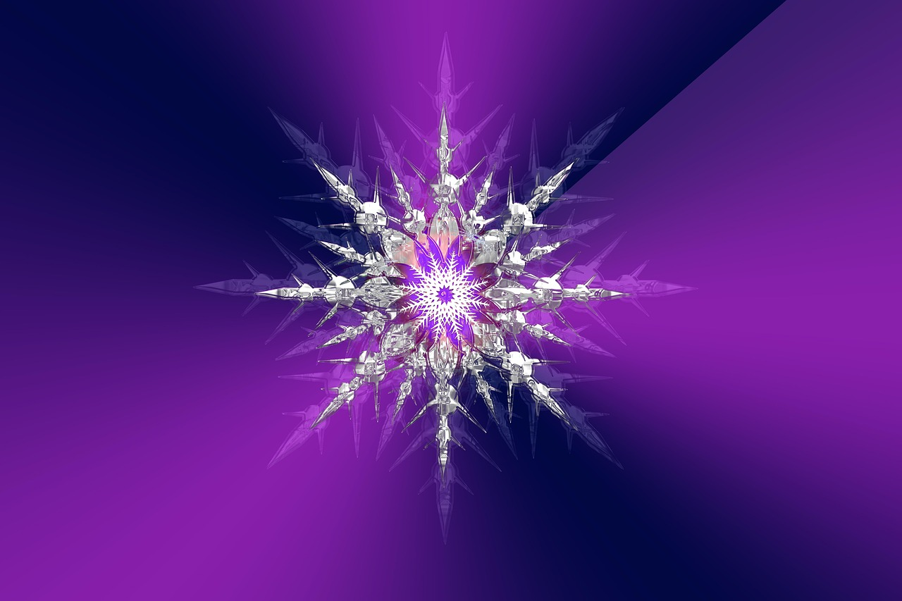
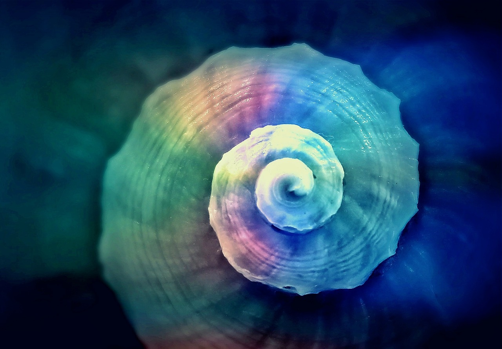

Фрактали в природі


Загадка: Чому лист і ціле дерево повторюють один візерунок?
Спіралі Фібоначчі


Загадка: Чому золотий перетин часто зустрічається в природі?
Симетрія та дзеркала


Загадка: Чи можна розрізати симетричний малюнок на однакові частини?
Інтерференція хвиль


Загадка: Що станеться, якщо накласти дві хвилі з однаковою довжиною, але різною фазою?
Графіки та криві


Загадка: Яка крива з'єднує два простих гармонійних руху?
Спробуй сам знайти закономірності та візерунки в природі!